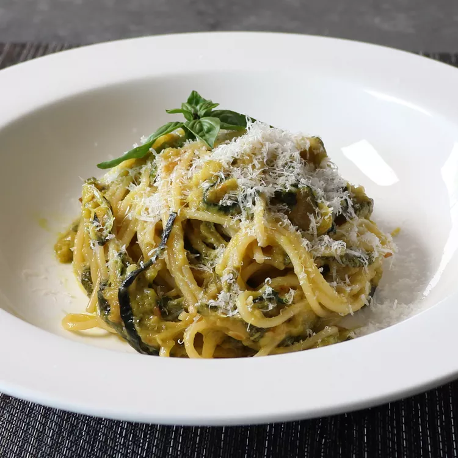

Spaghetti alla Nerano

Description
After listening to Stanley Tucci lose his mind about this pasta and calling it life-changing and one of the best things he's ever eaten, I decided I'd give it a try. The results were amazing and the key to getting the toasted sweet taste of the zucchini was deep-frying it!
Ingredients
- 1 quart sunflower oil, or as needed
- 6 medium green zucchini
- 4 ounces spaghetti
- 2 tablespoons olive oil
- 1 pinch salt
- 2 basil leaves, torn into small pieces
Steps
- Place sunflower oil in a deep fryer and heat to 350 degrees F (175 degrees C). Slice zucchini into 1/8-inch rounds.
- Add some zucchini to the hot oil and deep-fry until lightly browned, 4 to 5 minutes. Transfer to a single layer on paper towels to drain and repeat to cook remaining zucchini. Let zucchini cool to room temperature.
- Transfer cooled zucchini to a bowl. Cover and refrigerate, 8 hours to overnight.
- Bring a large pot of lightly salted water to a boil. Cook spaghetti in the boiling water, stirring occasionally, until it's 2 minutes away from being tender yet firm to the bite, 9 to 10 minutes.
- As you are cooking the spaghetti, heat olive oil in a skillet over medium heat. Add zucchini and salt and cook, stirring occasionally, until it starts to release juices, soften, and break down, 3 to 5 minutes. Add a couple splashes of the pasta water to the zucchini, but don't overdo it. Break zucchini into small pieces with the edge of a spoon or spatula. Reduce heat to low and toss in basil and butter; stir until butter melts.
- Grab spaghetti with tongs and transfer it right into the sauce; stir until coated. Mix in Pecorino Romano and Parmigiano-Reggiano cheeses. Add a final splash of pasta water and adjust salt if needed.
- Serve with more grated cheese and fresh basil.